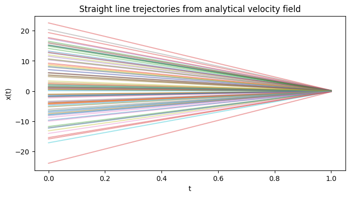
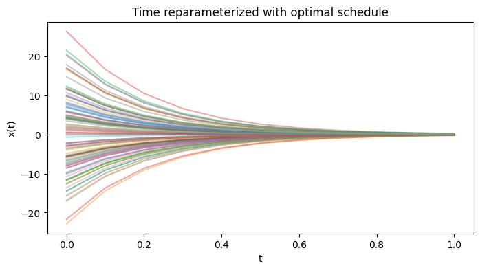

Optimal Scheduling in Flow-based Generative Models
Zhi Ren
Final project for 6.8300, Spring 2025, MIT
Zhi Ren
Final project for 6.8300, Spring 2025, MIT
Sampling from complex distributions lies at the heart of computational statistics and machine learning. It underpins a wide range of applications—most notably in computer vision, where one often seeks to generate images (optionally conditioned on specific labels) by drawing samples from their underlying distribution. These machine learning models, which generate samples from a (learned) distribution, are commonly referred to as generative models. While numerous models have been proposed and the field of generative models has seen significant advancements, the challenge of efficient sampling and learning still remains. Perhaps a more fundamental question to ask is: among all the possible generative models, which one is optimal and what does optimality even mean here? In this blog post, we will explore the optimality of flow-based models, where optimality is defined in terms of the regularity of the underlying velocity field (see Motivations).
A recurring theme in flow-based generative models is to represent a transport map that pushes forward a reference distribution ρ to a target distribution π through the time-one flow map of some ODE:
\[ \begin{cases} \frac{d}{dt}X(x,t) = f(X(x,t), t), \\ X(x,0) = x, \end{cases} \]We denote the time-t flow map by $X^f(x,t)$ and in particular the time-one map $T^f$. The reference distribution $\rho$; is chosen a priori (e.g. uniform or Gaussian), and the target distribution $\pi$; is where we want to draw samples (e.g. images). Flow-based generative modeling learns f (often parameterized by a neural net) so that $T^f$ pushes $\rho$ to $\pi$.
One can think of the reference distribution $\rho$ as something chosen a priori, and this is usually chosen to be a simple distribution we know how to sample from (for example, uniform distribution or standard Gaussian distribution) and the target distribution is where we actually want to draw samples (for example, images). The idea of flow-based generative modelling is then to learn the velocity field \(f\) (usually from a neural network class) such that the time-one flow map \(T^f\) pushes forward the reference distribution \(\rho\) to the target distribution \(\pi\). Typically, we have a finite collection of samples from $\pi$, which is our training data.There are two major schemes for learning the velocity field. On the one hand, we have normalizing flows ([1]), which learn the velocity field by minimizing the Kullback-Leibler divergence between the target distribution and the pushforward of the reference distribution; equivalently, this can be achieved by maximizing the log-likelihood over the training data. On the other hand, we have flow-matching and stochastic interpolant (see [2] and [3]), which pre-specifies a velocity field by conditional expectation and learns the target velocity field by a least square regression. However, as we observe (see e.g.[4]), regardless of the training scheme, there are many different ways to define the velocity field and the choice of the velocity field can have a significant impact on the performance of the generative model. In this blogpost, we shall explore the numerical implications for the theory of optimal velocity fields from [4] and show numerically how the introduction of a time reparameterization can improve regularity in the underlying velocity field.
Let's assume $\rho(x) = \mathcal N(0, \sigma_0^2)$ and $\pi(x) = \mathcal N(0, \sigma_1^2)$, where $\sigma_0$ is large and $\sigma_1$ is small. Then the (unique) transport map $T$ that pushes forward $\rho$ to $\pi$ is given by $T(x_0) = \frac{\sigma_1}{\sigma_0}x_0$. The velocity field $v(x,t)$ with straight-line trajectories satisfies: \[f((1-t)x_0 + t\frac{\sigma_1}{\sigma_0}x_0, t) = \frac{\sigma_1}{\sigma_0}x_0 - x_0\] and we can thus solve to obtain \[ f(x, t) = \left(\frac{\sigma_1}{\sigma_0}-1\right)\frac{x}{(1-t) + t\frac{\sigma_1}{\sigma_0}}. \]
In the following numerical illustration, we work with distributions $\sigma_0 = 10$ and $\sigma_1 = 0.1$.  We see in the above plot that there is a clear singularity forming phenomenon near $t = 1$ as particples get more and more concentrated. It is also not hard to see that the Lipschitz constant of the velocity field blows up when $\sigma_1\rightarrow\infty$. Using Theorem 6 of [4], we derive that the optimal schedule takes the form $\tau(t) = \frac{(\sigma_1/\sigma_0)^t-1}{\sigma_1/\sigma_0 - 1}$, which satisfies $\tau(0) = 0, \tau(1) = 1$. If we substitute in the optimal schedule, we can see that the velocity field becomes:  We see the trajectories start bending starting from $t = 0$, which averages out the worst case spatial Lipschitz constant over the time interval $[0,1]$.
While the sampling quality we demonstrate above looks promising, one major problem with the optimal schedule computed using results in [4] is that its computation requires maximum and minimal singular values of $\nabla T^f(x)$, which in practice we do not have access to. One attemp we tried in this project is to develop an iterative scheme to learn the optimal schedule, together with the velocity field. The idea is that we can use the learned velocity field to compute the optimal schedule by estimating the corresponding singular values and we can then use the optimal schedule to re-compute the velocity field, and repeat this process until convergence. The algorithm is summarized below.
Algorithm: Alternating Optimization of Flow and Schedule